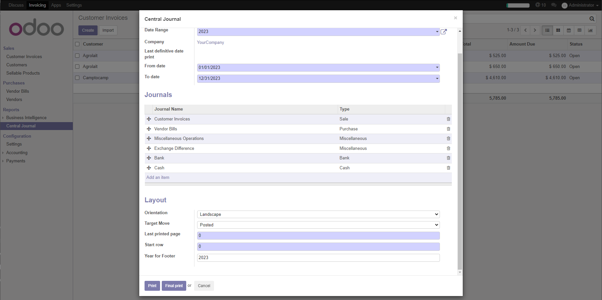

Print fiscal account journal

Stampa libro giornale fiscale






This module prints the italian fiscal journal.
Italian law requires some specific data on journal layout: this module respect these rules.
This module, sometime, is called account_central_journal.

Cosa è:
Questo modulo permette di stampare il libro giornale secondo le regole legali e fiscali italiane. Questo modulo differisce dall'analogo modulo OCA per alcune caratteristiche. Si prega di leggere attentamente le caratteristiche riportate in basso.
Destinatari:
Tutti i soggetti passivi IVA
Normativa e prassi:
| Description | Descrizione | Z0incombenze(R) | OCA | Note(s) | |
| Number sequence | Numerazione progressiva | ✅ | ✅ | Art. 2219 del CC | |
| Separation between moves | Riga separazione tra registrazioni | ✅ | ❌ | ||
| Print layout | Impaginazione | Min larghezza colonne | Miglioramenti layout | ||
| Print layout | Impaginazione | Importi a zero non stampati | ❌ | ||
| Journal search | Ricerca sezionali | Per azienda | Gestione multi-company | ||
| Targert move | Finalità registrazioni | Solo contabilizzato | All | In stampa ufficiale è un controllo bloccante | |
| Date search | Ricerca per data | Procedimento modificato | |||
| Print order | Ordine di stampa | date/name/id | date/name | ||
| Final print | Stampa ufficiale | Aggiorna pagina su anno fiscale | ❌ | ||
| Paper orientation | Orientamento carta | Orizzontale o verticale | Fixed | ||


Accounting » Configuration » Accounting » Date Ranges
Create a date range of type "Fiscal Year" or set "Fiscal Year" value to a date range to print. This record gather the fiscal progressive values.

Contabilità » Configurazione » Contabilità » Intervalli date
Creare un intervallo date di tipo "Anno fiscale" oppure assegnare il tipo "Annno fiscale" all'inteervallo date da stampare. Questo record raccoglie i dati fiscali progressivi.


Accounting » Reports » Central Journal
Set value to print.
To print, click on button Print or Final print . Final Print cannot be repeated and set layout values on data range

Contabilità » Rendiconti » Libro Giornale
Impostare i parametri di stampa.
Per stampare fare click sul bottone Stampa o Stampa definitiva. La stampa definitiva non può essere ripetuta e aggiorna i dati fiscali nell'intervallo date selezionato.
Authors | Autori:
Contributors | Partecipanti:
This module is maintained by the SHS_AV s.r.l..
This module is part of l10n-italy project.
Published information on | Informazioni pubblicate: 2024-12-30